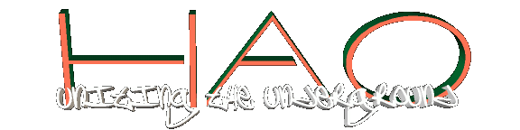

|
the question is : How hackers hacks hackers??? worse than this: HOW HACKERS CAN BE HACKED???? JxLxMx was here , brasilian rulez .... hey, that flipz are out of control... how he do that? 
|
|
|
"A word from our sponsor" Welcome once again to another HAO site. If you have visited our site in the past, you will notice that we have undergone a few "major" changes. HAO has changed drastically, please check the news section in order to find out about these changes. We hope you have enjoyed you visit here and welcome any comments you may have regarding our website and or any services you may interested in. HAO Our MissionHAO was founded to create a safe arena for information exchange between computer users with the common bond of a thirst for knowledge. Despite the concept of the social masses, Hackers are NOT criminals. Hackers are merely users who are not satisfied with being told what they can perform on their computers or what the limits of their systems are. Hackers have the ability to push computer science and computer technology to the extreme. To put it simply, without "Hackers" you would not be reading this statement as you are now, for there would not be a computer in your home or office, nor would their be an internet as we know it today. Hackers have made it all a possibility. Organizational ProfileWho we are
Hackers vs. Society
Hacker Genocide
The Time is Now
THE TIME HAS COME TO UNITE THE UNDERGROUND
Contact InformationPlease feel free to contact us at anytime. For contact with the executives of HAO please send questions or comments to the general information E-mail address and request to be responded to by one of the executives.
|
|
Send mail to webmaster@hao.org with
questions or comments about this web site.
|